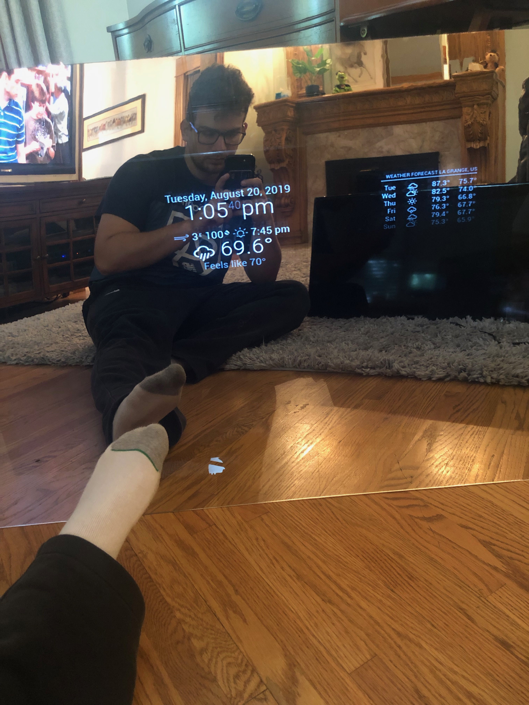

The Idea
The idea for this project came to me as I was browsing Reddit a week or two before Father's Day. Like most 19 year olds, I didn't know what I was going to get my dad for Father's Day yet. I stumbled across a post of someone who had just finished making a Magic/Smart Mirror. It seemed really cool, so I decided to do a little more reading about the project. The list of items needed for this project was suprisngly small for what I was expecting. It was only:
- A Piece of Acrylic
- A Monitor
- A Raspberry Pi
- A USB Mouse and Keyboard
- A Wood Frame
All of these things could be easily obtained through Amazon, and I was looking to do some type of EE/CS project over summer anyways so why not make the Magic Mirror my dad's present?
The Build
Once I recieved all of the parts above, I started putting things together.
First, I unboxed the Raspberry Pi, hooked it up to my monitor and downloaded the Raspian Operating System.
Once the operating system was installed, I manuvered my way over to the open source software for the Magic Mirror project.
After a quick pull of the software onto the Raspberry Pi, I was ready to get started configuring the project for my father.
The default layout looked like this:

This looks good, but not good enough. There's so many more things that can fit on this screen.
Third-Party Modules
After I got the initial layout up, I went right to the forums to see what kinds of third-party modules people had created thus far. There are TONS of modules to look at, and out of all of them (Yes I actually went through all of them) I found some really great ones to add to the project.
In order, here are my favorite/most useful third-party modules that I used:
- MMM-Remote-Control - This module allows the use of a webpage to control what appears on your monitor. It also allows for remote control shutdown of the Magic Mirror. This module is perfect for altering the display on command, and definitely the most impactful of all of these modules.
- MMM-BobRoss - This module displays photos of different works of art from artist Bob Ross. Also has a video feature that is voice activated.
- MMM-MyScoreBoard - This module cycles through professional sports games. Can be configured to display teams that you specifically want.
- MMM-DailyBibleVerse - This module displays the daily bible verse from biblegateway.com.
- MMM-Jeapardy - This module cycles through every single Jeapardy question and their respective answers.
- MMM-MyStandings - This module will display the standings for the NHL, MLB, NFL, and NBA. Can be configured to only include the leagues you want.
- MMM-Earth - This module shows live pictures of the Earth taken from the DSCOVR satellite.
- MMM-AVStock - This module will display stock tickers across the bottom of your mirror. Can be customized to display any stocks you like.
These are just some of the hundreds of modules that you can add to a magic mirror. For example, I saw a module that would find the 10 closest gas stations to you and give you the gas prices of all of them. I've also seen a module that can show you the local movie listings.
The Finished Product
After adding in all of the third-party modules and messing around with the configuration, I was finally finished.

I can say, without a doubt, it turned out even better than I expected. My dad thought so too when he got it. If you or someone you know is interested in this project, take a look at Magic Mirror Central . This website was what I ended up using to guide me along in the process of creating my Magic Mirror. It makes a great gift for any holiday or occasion.
Other Projects
- Location: La Grange, IL
- Phone Number: 630-670-5758
- Email: brycemosk26@gmail.com